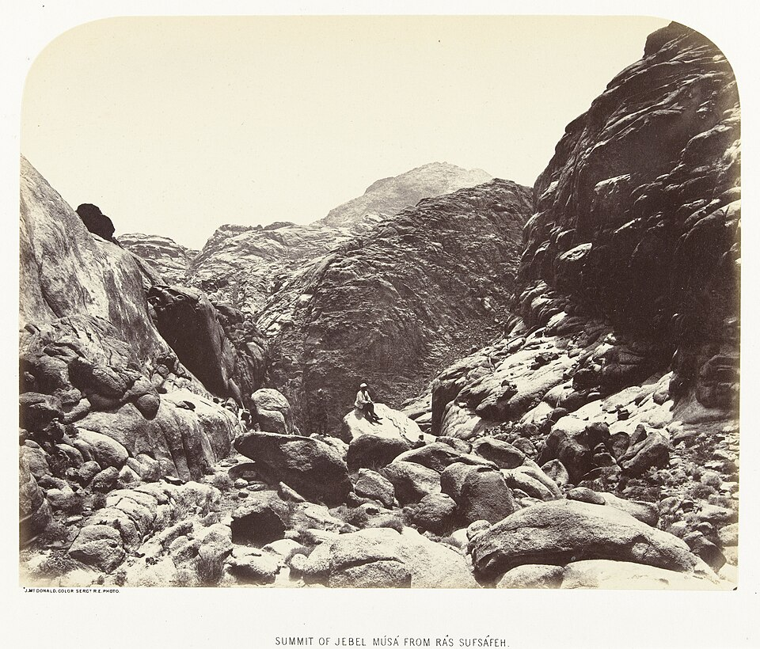

Бог не меняется. Меняются люди. Библия — летопись того, насколько близко они подошли.
Одни люди в Писании были врагами Бога. Другие были чужими, третьи — рабами, четвёртые — детьми, а нескольких Он назвал Своими друзьями. Каждый раз это тот же Бог. Менялось лишь то, где стоял человек.
Эта страница проходит по шести расстояниям: как выглядит каждое, как Бог обходился с людьми на каждом из них, при чём тут время и как понять, где сейчас стоишь ты.
Один дом, три расстояния. Отец обнимает сына, который ушёл. Сын, который остался, стоит в нескольких футах — дальше всех. Рембрандт, Возвращение блудного сына, ок. 1668.
01 · То, что не движется
Неизменный Бог, Который продолжает приходить.
«Бог не меняется» — это о Его сердце и Его слове. Это никогда не значило, что Он сидит на месте.
Проще всего это сказано у Малахии, и на том же дыхании звучит то, что кажется противоположным. «Я, Господь, не изменяюсь», — говорит Он, и именно поэтому Израиль не исчез (Мал. 3:6). А стихом ниже: «Вернитесь ко Мне, и Я вернусь к вам» (Мал. 3:7).
Значит, Бог, Который не меняется, — это ещё и Бог, Который говорит: «Я вернусь». Это не противоречие. Это вся форма Библии в двух стихах. То, что Бог есть, неизменно. А то, где Он стоит по отношению к каждому человеку, движется — и движется потому, что движутся люди.
Его неизменность — не отстранённость. Именно поэтому Он снова и снова идёт за людьми.Мал. 3:6–7 · Лк. 15:20
Он уходит.«Когда он был еще далеко», отец бежит.Домой они возвращаются вместе.
Неизменно · не меняется никогда
Кто Он
Его характер. «Ни изменения, ни тени перемены», никаких хороших и плохих дней.Иак. 1:17 · Пс. 101:26–28
Его любовь. Она была раньше, чем кто-либо на неё ответил.Рим. 5:8 · Иер. 31:3
Его слово. Он не лжёт, и Его обещания стоят.Чис. 23:19 · Евр. 6:17–18
Его замысел: семья рядом с Ним, задуманная «еще до создания мира», от сада до города.Еф. 1:4–5 · Быт. 3:8 · Откр. 21:3
Иисус — полная картина всего этого, Тот же вчера, сегодня и вовеки.Евр. 13:8 · Ин. 14:9
В движении · меняется вместе с людьми
Насколько они близко
Насколько близко стоит человек. И часто это выбирает сам человек.Быт. 3:8–10 · Иак. 4:8
Как Он поступает с народом, который поворачивает, в ту или другую сторону.Иер. 18:7–10
Чем Он делится. Слуги получают указания, друзья — замыслы.Ин. 15:15 · Быт. 18:17
Как Он приближается. Он ходит по саду, говорит с горы, живёт в шатре, становится Человеком, а потом поселяется в людях.Исх. 25:8 · Ин. 1:14 · Ин. 14:23
Где Он ищет. Его первый вопрос в Библии: «Где ты?»Быт. 3:9 · Лк. 19:10
Если Бог везде, как кто-то может быть далеко?
Если Он наполняет небо и землю (Иер. 23:24), как кто-то может быть от Него далеко? Давид не мог найти места, где укрыться от Его Духа (Пс. 138:7–10), а Павел сказал толпе чужих людей, что Бог «не далек от каждого из нас» (Деян. 17:27–28).
Писание отвечает двумя видами присутствия. Он везде одновременно, и ещё Он является: облаком и огнём на горе, славой, наполняющей шатёр, огнём, сходящим на храм (Исх. 19:18, Исх. 40:34–35, 2 Пар. 7:1–3). У Синая люди у подножия были не дальше от Бога в милях, чем Моисей в облаке. Дальше они были в том, сколько Его они позволяли себе увидеть (Исх. 20:18–21). Когда эта страница говорит «близко» и «далеко», она имеет в виду второй вид присутствия.
02 · Шесть расстояний
Враг, чужой, слуга, дитя, друг, возлюбленный.
Каждое из этих слов Библия действительно использует, когда говорит о положении человека перед Богом. Выбери кольцо.
Сейчас: Дитя · 4 из 6
В центре — Его сердце, и оно не движется. Пунктир — вторая половина истории: Он всё время выходит навстречу дальним кольцам.
Враг
ἐχθρός echthros · אֹיֵב oyev
Обращён против Него, обычно молча. Вражда идёт с нашей стороны. С Его стороны всё наоборот.
Признаки, что ты стоишь здесь
Его путь кажется нападением на твой путь: ты не можешь ему подчиниться и не хочешь (Рим. 8:7).
Ты втайне считаешь, что проблема в Нём: это Он тебя подвёл и что-то от тебя утаивает.
Ты дружишь с мирским способом хватать и мериться, и Иаков называет это своим именем (Иак. 4:4).
Плод виден в делах раньше, чем ты признаешь это словами (Кол. 1:21, Гал. 5:19–21).
Путь внутрь
Перестань сражаться. Примирение — не приз, который надо завоевать. Это предложение, которое надо принять: «примиритесь с Богом» (2 Кор. 5:20). Первым шагом Савла был вопрос: «Кто Ты, Господи?» (Деян. 9:5). Честный вопрос — часто то место, где враг начинает поворачиваться.
Кто стоял здесь и как Бог с ними обходился
В Писании
Павел говорит, что все мы когда-то были здесь: «враги Богу», и всё же любимые; «далеки от Бога и враждебны Ему» в своём разуме, что и было видно по делам (Рим. 5:10, Кол. 1:21). Ярче всех — Савл из Тарса. Он охотился на людей Иисуса, а Иисус принял это на Свой счёт: «почему ты Меня гонишь?» (Деян. 9:4).
Как Бог обходится с врагами
Он посылает им дождь и солнце (Мф. 5:44–45). Он умер за них, когда они были ещё врагами (Рим. 5:8–10). Потом Он посылает вестников просить их о мире (2 Кор. 5:18–20). Писание может сказать, что Бог — «противник гордых» (Иак. 4:6), но даже за самой жёсткой строкой, «Он стал им врагом», сразу следует память о «древних днях, днях Моисея» (Ис. 63:10–11).
Вдали
μακράν makran · ξένος xenos · גֵּר ger
Не враждебен, просто снаружи. С любопытством, с уважением, на расстоянии. И часто ближе, чем сам думает.
Признаки, что ты стоишь здесь
Ты уважаешь Бога или саму идею Бога, но Он для тебя скорее тема, чем Личность.
То, что ты о Нём знаешь, в основном из вторых рук: что говорили другие.
Тебе интересно, но если бы Его не было, в твоей неделе ничего бы не изменилось.
Иногда ты чувствуешь притяжение и не знаешь, откуда оно. Это притяжение — не пустяк (Ин. 6:44).
Путь внутрь
Приходи и посмотри. Это и было всё приглашение Иисуса двум любопытным (Ин. 1:39). Он обещает, что ищущий всем сердцем найдёт (Иер. 29:13, Лк. 11:9–10). В притче отец увидел сына, «когда он был еще далеко» (Лк. 15:20). Он смотрел на дорогу.
Кто стоял здесь и как Бог с ними обходился
В Писании
Павел говорит о язычниках, что они были «далеко» и жили «без надежды и без Бога» (Еф. 2:12–13). В этом кольце стоят моавитянка Руфь (Руфь 2:10–12), Корнилий, чьи молитвы Бог заметил прежде, чем тот узнал Евангелие (Деян. 10:2–4), и учитель Закона, которому Иисус сказал: «Недалеко ты от Божьего Царства» (Мк. 12:34).
Как Бог обходится с чужими
Он селит людей там, где они могут потянуться к Нему, «хотя Он и не далек от каждого из нас» (Деян. 17:26–27). Он замечает молитвы и милостыню чужака (Деян. 10:4). Он возвестил мир «вам, бывшим далеко от Него» (Еф. 2:17). Его Закон снова и снова велел Израилю любить чужеземца, потому что и сами они были чужеземцами (Втор. 10:18–19).
Слуга
δοῦλος doulos · μίσθιος misthios · עֶבֶד eved
Внутри дома, под приказами. Достаточно близко, чтобы работать, и слишком далеко, чтобы знать зачем.
Признаки, что ты стоишь здесь
Главный твой мотив — избежать наказания. «Страх связан с наказанием» (1 Ин. 4:18).
Ты ведёшь счёт. Ты знаешь, что сделал для Бога, и чувствуешь, чего тебе за это не доплатили.
Ты знаешь, чего Бог требует, но не знаешь, что Он делает (Ин. 15:15).
После неудачи ты держишься в стороне, пока не заработаешь право вернуться.
Путь внутрь
Услышь, что отец сказал сыну, который работал на него, как слуга: «ты ведь всегда со мной, и все, что у меня есть, — все твое» (Лк. 15:31). Ты получил не «дух рабства, чтобы опять жить в страхе», а Духа усыновления, «Которым мы и обращаемся к Богу: „Абба! Отец!“» (Рим. 8:15). Движение внутрь — не в том, чтобы работать усерднее. Оно в том, чтобы поверить тому, что Он уже сказал.
Кто стоял здесь и как Бог с ними обходился
У этого слова три лица
Раб греха. Принадлежит тому, чему подчиняется (Ин. 8:34, Рим. 6:16–20). Это вообще не положение перед Богом. Это то, от чего Он освобождает людей.
Слуга из страха. Слушается Бога, чтобы не попасть в беду. Работает за плату. В это кольцо чаще всего сползают церковные люди, и к нему Иисус обращался больше всего.
Слуга из любви. Раб из Исх. 21:5–6, который говорит: «Я люблю своего господина», и отказывается от свободы. Так начинают свои письма Павел, Иаков и Пётр, а в последней главе Библии «Его слуги будут служить Ему» и будут видеть Его лицо (Откр. 22:3–4). Служение никогда не остаётся позади. Позади остаётся страх.
В Писании
Израиль в Египте, потом Израиль у Синая, который попросил Моисея слушать за него (Исх. 20:19). Слуга, который закопал свой талант, потому что «очень боялся» господина, человека «сурового» (Мф. 25:24–25). И старший сын из Лк. 15, который никогда не уходил из дома и всё равно сказал: «Все эти годы я работал на тебя, как слуга» (Лк. 15:29).
Как Бог обходится со слугами
Он выводит их, чтобы приблизить к Себе: «Я нес вас на орлиных крыльях и привел к Себе» (Исх. 19:4). Освобождённых рабов Он называет «Мои слуги», чтобы никто другой не мог ими владеть (Лев. 25:42). Он даёт ясные правила людям, которые ещё не готовы к объяснениям. И Он выходит уговаривать сердитого сына, который не хочет войти (Лк. 15:28).
Дитя
τέκνον teknon · υἱός huios · בֵּן ben
Семья. Не нанят, не заработал. Рождён в неё и усыновлён в неё, а потом выращен.
Признаки, что ты стоишь здесь
Что-то в тебе называет Его Отцом, хотя этому тебя никто не учил. Сам Дух свидетельствует об этом вместе с твоим духом (Рим. 8:15–16, Гал. 4:6).
Тебя ведут, а не только тебе говорят (Рим. 8:14).
Ты поступаешь праведно и любишь братьев и сестёр. Это проверка самого Иоанна, самая простая в Библии (1 Ин. 3:10).
Когда ты падаешь, ты бежишь назад, а не прочь.
Ты начинаешь походить на Него и становишься добрым к тем, кто не добр (Мф. 5:44–45, Еф. 5:1).
Путь внутрь
Расти, оставаясь маленьким. Иисус в двенадцать лет должен был быть «в том, что принадлежит Отцу Моему», занят делом Своего Отца (Лк. 2:49). Дети, которые хранят Его слово, обнаруживают, что Отец и Сын поселяются у них (Ин. 14:21–23). Послушание из любви, а не из страха — дверь к тому, чтобы тебе открыли больше.
Кто стоял здесь и как Бог с ними обходился
В Писании
«Израиль — Мой сын, Мой первенец» (Исх. 4:22): его учили ходить, держали за руки, поднимали к щеке (Ос. 11:1–4). В Новом Завете это дано «всем тем, кто Его принял» (Ин. 1:12). Это рождение (Ин. 3:5–6) и законное усыновление (Еф. 1:5), и Иоанн не может к этому привыкнуть: «И мы действительно Его дети!» (1 Ин. 3:1).
Как Бог обходится с детьми
Он заботится о них прежде, чем они попросят (Мф. 6:31–32), и даёт хорошее, никогда не камни (Мф. 7:9–11). Он носит их, «словно отец своего сына» (Втор. 1:31). Он воспитывает их, и греческое слово здесь — то, которым говорят о воспитании ребёнка, а не о наказании преступника (Евр. 12:5–11). Маленьким детям дают молоко не потому, что Он любит их меньше, а потому, что большего они пока не вместят (1 Кор. 3:1–2, Евр. 5:12–14).
Друг
φίλος philos · אֹהֲבִי ohavi · סוֹד sod
Тот, кому Он рассказывает о Своих замыслах, и тот, чьего ответа Он ждёт.
Признаки, что ты стоишь здесь
Он тебе рассказывает: не только что делать, но и что Он делает (Ин. 15:15, Ам. 3:7).
Тебе важно то, что важно Ему, поэтому ты молишься о городах и людях и встаёшь в брешь (Иез. 22:30).
Без Него ты отказался бы и от обетованной земли. Моисей: «Если Ты не пойдешь с нами, то и не выводи нас отсюда» (Исх. 33:15).
Ты делаешь то, что Он говорит, не чтобы заслужить дружбу, а потому что так поступают друзья (Ин. 15:14).
Ты задерживаешься. Иисус Навин «не покидал шатра», когда Моисей уже возвращался в лагерь (Исх. 33:11).
Путь внутрь
Оставайся. В Ин. 15 Иисус повторяет это слово десять раз (μένω, menō, «оставаться, пребывать»); в НРП оно звучит так: «Будьте во Мне, и Я буду в вас» (Ин. 15:4). Дружба с Богом не достигается в одно мгновение. Это время, проведённое с Ним, как и в любой дружбе.
Кто стоял здесь и как Бог с ними обходился
В Писании
Авраам: «потомство Авраама, Моего друга», говорит Бог. Еврейское слово значит «тот, кто любит Меня» (Ис. 41:8, 2 Пар. 20:7, Иак. 2:23). Моисей, с которым Бог говорил «лицом к лицу, как человек говорит со своим другом» (Исх. 33:11), прямо, а не загадками (Чис. 12:7–8). Лазарь, «наш друг» (Ин. 11:11). А потом ученики, в последнюю ночь: «Я больше не называю вас слугами … но Я называю вас друзьями» (Ин. 15:15).
Как Бог обходится с друзьями
Он доверяет им. «Скрою ли Я от Авраама то, что собираюсь сделать?» (Быт. 18:17). Еврейское סוֹד в Пс. 24:14 — это тесный круг, где обсуждают замыслы. Он позволяет друзьям спорить: Авраам торгуется о Содоме (Быт. 18:23–33), Моисей отговаривает Его от суда, и «Господь смягчился» (Исх. 32:10–14). Он даёт друзьям то, о чём они просят (Ин. 15:7, 16).
Возлюбленный
ἀγαπητός agapētos · יְדִיד yedid · אִישִׁי ishi
Вопрос о «лучшем друге». Библия никогда не выстраивает Его друзей по рангу, но показывает, кто приник ближе всех.
Признаки, что ты стоишь здесь
Твоя личность держится на Его любви к тебе, а не на твоей любви к Нему. Пётр сказал: «Да я готов даже жизнь отдать за Тебя», и упал (Ин. 13:37–38). Иоанн называл себя тем, кого любил Иисус, и именно он стоял у креста (Ин. 19:26). Это наше прочтение того, как Иоанн называет себя, а не правило, которое прямо утверждает текст.
Ты первым узнаёшь Его. Именно любимый ученик сказал с лодки: «Это Господь!» (Ин. 21:7).
Ты хочешь Его больше всего, что Он даёт: «Одного я прошу у Господа … созерцать красоту Господню» (Пс. 26:4); это то самое «нужно ведь только одно», которое выбрала Мария (Лк. 10:42).
Тебе доверяют людей, о которых надо заботиться. Близость всегда оборачивается тем, что тебе доверяют других (Ин. 21:15–17).
Дальше колец нет
За этим кольцом нет другого, только глубже внутрь. И очереди нет: о каждом верующем сказано «любимые Богом» (Кол. 3:12, Рим. 1:7). Иоанна не любили больше, чем Петра. Похоже, он просто больше в это верил. Внутренний круг открыт каждому, кто готов приникнуть.
Кто стоял здесь и как Бог с ними обходился
В Писании
«Пусть возлюбленный Господом безопасно покоится при Нем … между Его плечами» (Втор. 33:12). Даниил, которому трижды сказали, что он «крепко любим» (Дан. 9:23, 10:11, 10:19). Давид: «человек этот Мне по сердцу» (Деян. 13:22). И Иоанн, который ни разу не называет себя по имени в своём Евангелии. Он называет себя только так: «ученик, которого любил Иисус», тот, кто возлежал рядом с Иисусом на ужине (Ин. 13:23).
Как Бог обходится с возлюбленными
Он позволяет им опереться на Него (Ин. 13:23–25). Он доверяет им то, что любит больше всего: с креста Иисус отдал Иоанну Свою мать (Ин. 19:26–27). А конец истории — свадьба. Осия видел день, когда Израиль назовёт Бога «Муж мой» (אִישִׁי) и больше не будет звать «Мой Господин» (Ос. 2:16), и Библия заканчивается невестой (Откр. 19:7, 21:2).
Положение даётся. Близость проживается.
Во Христе Новый Завет называет каждого верующего всем этим сразу: дитя (Гал. 3:26), друг (Ин. 15:15), слуга (Рим. 6:22), любимый (Кол. 3:12), обручённая невеста (2 Кор. 11:2). Ни одно из этих имён не звание, которое надо заработать.
Так что эти кольца не о том, в какой ты семье. Они о том, насколько близко ты на самом деле живёшь. Старший брат в Лк. 15 был сыном на бумаге и рабом в собственной голове. Верно было и то и другое, и второе стоило ему праздника.
03 · Та же гора
Кольца рисовали дважды.
Один раз у Синая и ещё раз вокруг Иисуса. Оба раза одна и та же форма. Разница в том, кто решал, где стоять людям.

Вершина Джебель-Муса, традиционной горы Синай; снимок James McDonald из Королевских инженерных войск для Топографической съёмки Синая, 1868–69. Один человек на камне, далеко внизу от вершины.
Расстояние
У Синая
Вокруг Иисуса
Снаружи
У СинаяНарод за границей у подножия. Они видели огонь, дрожали и «встали поодаль».Исх. 19:12 · Исх. 20:18–21
Вокруг ИисусаТолпы. Им Он говорил притчами, «но когда Он оставался наедине со Своими учениками, Он все им объяснял».Мк. 4:33–34
Призваны наверх
У СинаяСемьдесят старейшин. Они поднялись часть пути, «увидели Бога Израиля», ели и пили там.Исх. 24:1 · Исх. 24:9–11
Вокруг ИисусаСемьдесят два ученика, посланные вперёд по двое и вернувшиеся в изумлении.Лк. 10:1 · Лк. 10:17
Названы по имени
У СинаяАарон, Надав и Авиуд, названные по имени и призванные наверх вместе со старейшинами.Исх. 24:1 · Исх. 24:9
Вокруг ИисусаДвенадцать, поставленные, «чтобы они всегда были с Ним».Мк. 3:13–14
Дальше внутрь
У СинаяИисус Навин, который поднялся с Моисеем выше, а позже не покидал шатра.Исх. 24:13 · Исх. 33:11
Вокруг ИисусаПётр, Иаков и Иоанн, единственные в доме Иаира, на горе и дальше всех в Гефсимании.Мк. 5:37 · Мк. 9:2 · Мк. 14:33
Внутри
У СинаяМоисей, вошедший в облако на сорок дней, а потом говоривший с Богом лицом к лицу.Исх. 24:18 · Исх. 33:11
Вокруг ИисусаУченик, которого любил Иисус, возлежавший рядом с Ним на ужине.Ин. 13:23
Когда завеса разорвалась, кольца перестали назначать. Занавес перед Святым Святых разорвался сверху донизу, и Послание к евреям превращает это в приглашение для всех: «давайте приблизимся к Богу» (Мф. 27:51, Евр. 10:19–22, Еф. 2:18).
Кто решал, где стоять людям?
Синай: расстояние выбрал народ
Приглашение у Синая было для всего народа: «вы будете у Меня царством священников» (Исх. 19:6). Целый народ священников — это целый народ, которому позволено приблизиться. Но когда гора задрожала, они попросили посредника: «Говори с нами ты сам … Пусть Бог не говорит с нами». И тогда «народ остался стоять поодаль, а Моисей приблизился к темному облаку, где был Бог» (Исх. 20:19–21).
Бог согласился на такой порядок, а потом сказал, чего Ему хотелось: «О если бы их сердце побуждало их всегда бояться Меня» (Втор. 5:28–29). Даже тогда близость не была заперта. Любой, кто хотел о чём-то спросить Господа, мог выйти к шатру встречи (Исх. 33:7).
Иисус: выбрал Он, а они остались
Вокруг Иисуса круги начинались с Его выбора. Он «позвал к Себе тех, кого Сам пожелал» (Мк. 3:13). Но круги складывались и из того, кто остался. Когда толпы ушли, Он спросил Двенадцать, не хотят ли и они уйти, и Пётр ответил: «к кому нам еще идти?» (Ин. 6:66–68). Мария из Вифании не была одной из Двенадцати, и Иисус сказал, что она «выбрала лучшее», сидя у Его ног (Лк. 10:42).
После креста приглашение открыто для всех, а ответ за нами: «Приблизьтесь к Богу, и Он приблизится к вам» (Иак. 4:8).
04 · Один отец, два сына
Отец не меняется никогда. Меняются оба сына.
Лк. 15 — вся эта страница в одной истории. Два сына, оба на расстоянии, и отец, который выходит к каждому.
Рембрандт, ок. 1668. Государственный Эрмитаж, Санкт-Петербург. Общественное достояние.
Младший сын · вдали
Он ушёл в далёкую страну
Он просит свою долю сейчас, а это почти то же, что пожелать отцу смерти, и отправляется «в далекую страну» (Лк. 15:12–13). Слово Луки — μακράν, makran, то же, которым Павел говорит о народах, «бывших когда-то далеко» (Еф. 2:13). А потом, на пути домой, «когда он был еще далеко» — снова μακράν — «отец увидел его, и ему стало жалко сына. Он побежал» (Лк. 15:20).
Читать дальше
У него была готова речь, и заканчивалась она просьбой о работе: «обращайся со мной как с одним из своих батраков» (Лк. 15:19). В лучших рукописях он так и не успевает произнести эту строку (Лк. 15:21). Отец перебивает его одеждой, перстнем и сандалиями (Лк. 15:22), а это одежда сына. Отец не позволил ему перескочить из дальних в слуги. Он сразу вернул его в сыновья.
Старший сын · слуга в собственной голове
Он никогда не уходил, и был дальше всех
Он был в поле, рядом с домом, и не захотел войти. «Все эти годы я работал на тебя, как слуга», — а глагол здесь δουλεύω, douleuō, глагол раба, — «ты же никогда не дал мне даже козленка» (Лк. 15:29). Брата он называет «этот твой сын» (Лк. 15:30). У него есть адрес и наследство, а живёт он как наёмный работник, который ведёт счёт.
Читать дальше
Отец «вышел и стал его уговаривать», точно так же вышел, как и к младшему (Лк. 15:28). Он называет его τέκνον, teknon, «дитя» (в НРП — «Сынок»): «ты ведь всегда со мной, и все, что у меня есть, — все твое» (Лк. 15:31). А потом говорит: «твой брат» (Лк. 15:32), возвращая слово, от которого старший сын отказался.
Отец · неподвижный центр
Он двинулся навстречу обоим
Он не изменился ни между уходом первого сына и его возвращением, ни между пиром и ссорой за дверью. К одному сыну он побежал, к другому вышел. Одно и то же сердце выбрало два разных подхода, потому что два сына стояли в двух разных местах.
Читать дальше
Иисус заканчивает историю, когда старший сын всё ещё снаружи. Нам так и не говорят, вошёл ли он. История останавливается у открытой двери, потому что слушатели — фарисеи, недовольные тем, с кем Иисус ест (Лк. 15:1–2), — ещё не дали своего ответа.
05 · Долгая история
От сада до города одна линия стоит неподвижно.
Сплошная линия — насколько близко стояли люди, от Бытия до Откровения. Пунктир — Его сердце. Нажми на любую точку.
Быт. 2–3
Он ходил с ними
Первая картина Бога с людьми — прогулка по саду, когда «подул ветерок» (Быт. 3:8). Ни храма, ни завесы, ни посредника. Это и есть то «вначале», к которому Иисус всё время возвращает слушателей (Мф. 19:8).
Быт. 3
Первое расстояние создали мы
Первый шаг прочь делают люди: «испугался … вот я и спрятался» (Быт. 3:10). Первый шаг Бога — прийти и искать, с вопросом: «Где ты?» (Быт. 3:9). Он спрашивал не потому, что не знал, где они. Он спрашивал, потому что им нужно было сказать, где они стоят.
Быт. 4
Прочь от Него
Каин «ушел от Господа» (Быт. 4:16), но лишь после того, как Бог предупредил его, поговорил с ним и поставил на нём знак защиты (Быт. 4:6–7, 4:15). Даже у дальней страны была охрана.
Быт. 5–6
Двое ходили с Богом
Посреди скольжения вниз Енох «ходил с Богом» триста лет (Быт. 5:22–24), и Ной тоже (Быт. 6:9). Близость никогда не закрывалась. Даже в худший отрезок истории человек всё ещё мог ходить с Ним.
Быт. 12–22
Первый друг
Бог призывает Авраама, говорит с ним, ест у его шатра и рассказывает ему, что собирается сделать (Быт. 18:1–8, 18:17). Авраам спорит за Содом, и Бог позволяет ему (Быт. 18:23–33). Он первый человек, которого Библия называет Божьим другом (Ис. 41:8).
Исх. 1–2
Рабы, которые стонали
Четыре века спустя семья Авраама — рабы. Их вопль поднимается к Богу, и «Бог, услышав их стоны, вспомнил Свой завет» (Исх. 2:23–25). В Его обещании ничего не сдвинулось. Сдвинулись они.
Исх. 19
Приведены к Себе
Спасение было не только ради свободы. Оно было ради близости: «Я нес вас на орлиных крыльях и привел к Себе» (Исх. 19:4). Предложение — народ священников (Исх. 19:6).
Исх. 20
«Говори с нами ты сам»
Народ отступает и просит посредника, а Моисей один входит в тёмное облако (Исх. 20:19–21). Один и тот же момент вмещал два расстояния. Линия здесь — это народ, а не Моисей.
Исх. 25–40
Шатёр посреди стана
И Бог приближается в том виде, который они могут вынести: «Вели им сделать Мне святилище, и Я буду обитать среди них» (Исх. 25:8). Если они не хотели подняться к Нему, Он поставил шатёр среди них.
1 Царств — Псалтирь
Человек по Его сердцу
Давид хочет одного: жить в доме Господнем и созерцать Его красоту (Пс. 26:4). При всех своих падениях именно о нём Бог сказал: «человек этот Мне по сердцу» (Деян. 13:22), и он написал многое из того языка близости, которым мы пользуемся до сих пор.
Иезекииль · Иеремия
Слава покидает храм
После веков предупреждений Иезекииль видит, как слава поднимается над храмом и уходит через восточные ворота (Иез. 10:18–19). Но даже тогда через Иеремию Бог говорит: «Я думал, что … она вернется ко Мне» (Иер. 3:7), и обещает новый завет, написанный на сердцах (Иер. 31:31–34).
Евангелия
С нами Бог
На самую дальнюю точку истории Бог отвечает тем, что подходит ближе, чем когда-либо: Еммануил, «С нами Бог» (Мф. 1:23). Слово «жило среди нас», а по-гречески буквально «раскинуло шатёр» (Ин. 1:14). Тот же Бог, новый подход.
Крест
Завеса разрывается
Когда Иисус умирает, завеса, не пускавшая никого в Святое Святых, разрывается «сверху донизу» (Мф. 27:51). Она разорвалась сверху, со стороны Бога. Теперь войти можно «по новому и живому пути», и он открыт для всех (Евр. 10:19–22).
Деян. 2 →
Внутри, а не рядом
Иисус обещал, что Дух «живет с вами и останется в вас» (Ин. 14:17), и сказал о каждом, кто Его любит: «к тому Мы придем и будем жить у него» (Ин. 14:23). В Пятидесятницу присутствие, которое когда-то пребывало за завесой, переходит в людей (Деян. 2:1–4).
Откр. 21–22
Лицом к лицу
История заканчивается там, где началась, только больше: «Это жилище Бога с людьми» (Откр. 21:3), и «они будут видеть Его лицо» (Откр. 22:4). Сад стал городом, и больше никто не стоит вдали.
Высота точек — это прочтение истории, а не измерение. Диаграмма показывает форму: одна линия сильно движется, а другая не движется вовсе.
06 · Бог и время
Живёт ли Бог во времени?
Любые отношения происходят во времени: есть «до», «после», «ещё нет». Так что вопрос не абстрактный. От него зависит, может ли друг Бога действительно что-то изменить.
Мера — не комната
Вот этот довод в самом простом виде. Время — единица измерения, как дюйм. Нельзя быть «вне» дюймов, потому что дюймы — не место. Это способ измерять. Значит, фраза «Бог вне времени» может вообще ничего не значить.
Этот довод верен наполовину. Чтобы увидеть, на какую именно, примени тот же довод к пространству.
Где он верен
Мере нужно что-то, что она измеряет
Дюйм — не вещь. Это способ считать расстояние между вещами. Точно так же и час — не вещь. Он считает промежуток между одним событием и следующим. Если Бог действует, говорит, ждёт и отвечает, то в Его жизни одно следует за другим, а именно эту последовательность и измеряет время.
Где он буксует
Бога ведь и дюймами не измеряют
Никто не думает, что рост Бога — шесть футов. Он говорит: «Я наполняю небо и землю» (Иер. 23:24), и при этом у Него нет никакого размера. Так что «время — всего лишь мера» само по себе вопрос не решает. Другая сторона говорит, что Бог относится ко времени так же, как к пространству: присутствует в нём везде, но им не измеряется.
Выход в том, чтобы разделить две вещи, которые слово «время» связывает в одно. Первая — часы: солнце, дни и годы. Вторая — последовательность: одно происходит, а потом другое. Книга Бытия разделяет их за нас.
1вечер, утро
2вечер, утро
3вечер, утро
4созданы солнце и луна
5
6
7покой
В Быт. 1 «был вечер, и было утро» уже в первый, второй и третий дни, ещё до того, как появилось солнце. Светила появляются на четвёртый день, созданные, «чтобы различать времена, дни и годы» (Быт. 1:14–16). Часы были сотворены. Последовательность уже шла.
Собственные «до» и «после» Бога: что показывает Писание
Итак, часы — это то, что создал Бог, но «до» и «после», похоже, уходят дальше. О времени, когда никакого мира ещё не было, Иисус говорит в молитве, что Отец «полюбил Меня еще до создания мира» и что Он имел у Отца славу «еще до начала существования мира» (Ин. 17:5, Ин. 17:24). Любовь — в некоем «до». Псалом 89 и Пётр говорят, что тысяча лет для Него как день (Пс. 89:5, 2 Пет. 3:8): это меняет масштаб, но не отменяет последовательности. Откровение даже помещает отмеренный промежуток внутрь самого неба: «на небесах примерно на полчаса наступило молчание» (Откр. 8:1). У классической стороны два ответа: это язык видения, как свиток и его печати, и в любом случае это показывает, что длительность есть у неба, чего никто не отрицает. Вопрос в том, есть ли она у Самого Бога. И всё же стоит заметить: когда Писание изображает место, ближайшее к Богу, оно изображает «до» и «после». В Его именах есть времена глагола: Тот, «Кто был, Кто есть и Кто придет» (Откр. 4:8), «Древний Днями» (Дан. 7:9). У горящего куста еврейское אֶהְיֶה можно прочесть как «Я буду тем, кем буду» (Исх. 3:14; в НРП — «Я Тот, Кто Я Есть»): это имя, в котором есть будущее.
Четыре стиха, которые чаще всего приводят в пользу вневременного Бога, и пять — в пользу неизменного, возвращены каждый в свой абзац в Неизменный, но не безучастный, спутнике второй лекции, на которой построен Отец внутри времени.
Коротко
Он не внутри наших часов. И Он не без «до» и «после».
Часы (солнце, дни, годы) — это то, что Он создал, и они Ему не хозяева. День и тысяча лет для Него одно и то же. Но в Его собственной жизни есть последовательность. Он любил «до», Он говорит, а потом видит, Он ждёт, Он отвечает. «Божье время» — это Его собственные «до» и «после», и наши часы измеряют его только изнутри.
Это наше прочтение. Ниже другая сторона изложена в полную силу.
Что Бог делает в историиПятнадцать действий, которые, по словам текста, Он совершает и для которых нужны «до» и «после»
Abraham Heschel назвал это «божественным пафосом»: на Бога пророков влияет то, что делают люди (The Prophets, 1962). Сначала прочитай эти тексты в прямом смысле, а потом спроси, что любое другое прочтение вынуждено списывать на образный язык.
Сходит посмотретьБыт. 11:5 · Быт. 18:21
ВспоминаетБыт. 8:1 · Исх. 2:24
«Теперь Я знаю»Быт. 22:12
СожалеетБыт. 6:6 · 1 Цар. 15:11
Смягчается после молитвы другаИсх. 32:14
Смягчается, когда город обращаетсяИона 3:10 · Иер. 18:7–10
Прибавляет пятнадцать лет4 Цар. 20:1–6
Говорит: «Может быть, они послушают»Иер. 26:3 · Иез. 12:3
«Я думал, что … она вернется ко Мне»Иер. 3:7 · Иер. 3:19–20
«О чем даже не думал»Иер. 7:31 · Иер. 19:5
Ищет человека и не находитИез. 22:30
Ждёт и встаёт, чтобы помиловатьИс. 30:18 · 2 Пет. 3:9
Иисус удивляетсяневерию и вереМк. 6:6 · Мф. 8:10
Иисус возрастает в мудростиЛк. 2:52
Иисус не знает дняМк. 13:32
Что Бог знаетДругая группа текстов, которую любое честное прочтение тоже должно удержать
Возвещает о конце изначалаИс. 46:9–11
Предсказал заранее, чтобы ни один идол не мог приписать это себеИс. 48:3–5
Называет Кира до его рожденияИс. 44:28 · Ис. 45:1
Знает слово, когда его ещё нет на твоих устахПс. 138:4
Записал твои дни в Своей книгеПс. 138:16
Пётр: три отречения, прежде чем пропоёт петухМф. 26:34
Иуда, известный «с самого начала»Ин. 6:64
Крест, задуманный до сотворения мираДеян. 2:23 · 1 Пет. 1:20
Знает всё1 Ин. 3:20 · Пс. 146:5
«Он не человек, чтобы передумывать»Чис. 23:19 · 1 Цар. 15:29
Одна глава, которая не даёт поблажки ни одной сторонеВ 1 Цар. 15 одно и то же еврейское слово стоит трижды
Это слово — נחם, nacham: сожалеть, смягчиться, передумать. Рассказчик 1 Цар. 15 использует его трижды на протяжении двадцати пяти стихов, говоря об одном и том же Боге и одном и том же решении.
Стих 11 · говорит Бог«Я жалею, что сделал Саула царем».1 Цар. 15:11
Стих 29 · говорит Самуил«Слава Израиля не лжет и не передумывает; ведь Он не человек, чтобы передумывать».1 Цар. 15:29
Стих 35 · рассказчик«А Господь сожалел, что сделал Саула царем над Израилем».1 Цар. 15:35
Что бы ни значило «Бог не меняется», автор не считал, что это исключает «Господь сожалел». Он нарочно поставил одно рядом с другим. Стих 29 — об одном решении: Саул не вернёт себе царство мольбами. Стихи 11 и 35 — о сердце Бога. Он не отменил бы приговор, и Он скорбел о нём. И то и другое верно об одном и том же Боге в одну и ту же неделю.
Четыре ответа, которые давали людиОт полностью вне времени до открытого будущего, и кто какого ответа держится
Вне времениВнутри времени
ОТВЕТ 1
Вневременность
У Бога нет «до» и «после». Он охватывает всё время сразу, как человек на высоте видит всю дорогу, а путники видят только отрезок перед собой. «Сожалеет» и «смягчается» — это язык, приспособленный к нам.
Августин, Исповедь, кн. XI. Боэций, ок. 524: вечность — это «полное, одновременное и совершенное обладание бесконечной жизнью». Фома Аквинский, Сумма теологии I q.10 и I q.14 a.13 (образ дороги).
ОТВЕТ 2
Вне времени, потом во времени
Без творения Бог вне времени. Когда Он создал мир и вступил с ним в отношения, Он по-настоящему вошёл во время и с тех пор переживает его «сейчас».
William Lane Craig, Time and Eternity (2001).
ОТВЕТ 3
Вечный во времени
Бог всегда был во времени, без начала и без конца. У Его жизни есть настоящее прошлое и будущее. Большинство сторонников этого взгляда всё же говорят, что Он знает каждый будущий выбор. Некоторые говорят, что Он знает только то, что можно знать.
Nicholas Wolterstorff, «God Everlasting» (1975), и многие философы после него.
ОТВЕТ 4
Открытое будущее
Бог во времени и знает всё, что существует, каждую возможность и всё, что сделает Он Сам. Свободных решений, которые ещё не приняты, пока нет, и знать их ещё нечего. Его никогда не застают врасплох, потому что у Него есть план на каждый вариант.
Pinnock, Rice, Sanders, Hasker и Basinger, The Openness of God (1994). Sanders, The God Who Risks (1998). Boyd, God of the Possible (2000).
Восемь стихов, четыре прочтения
Четыре ответа — в выдвижном блоке выше. Выбери стих. Каждый ответ должен сказать, что он значит. Красная черта отмечает ответ, которому с этим стихом труднее всего, если такой есть.
«Теперь Я знаю, что ты боишься Бога»
Быт. 22:12 · после того как Авраам заносит нож
ВневременностьБог знал всегда. Древнее толкование понимает это как «теперь Я сделал это известным». Испытание показало страх Авраама самому Аврааму и нам.
Потом во времениЗнание никогда не было новым. Но «теперь» настоящее, потому что с момента творения Бог переживает каждый миг, когда тот наступает.
Вечный во времениБог заранее знал, что сделает Авраам. «Теперь» отмечает момент, когда страх стал фактом, и Бог прожил этот момент вместе с ним.
Открытое будущееПонимай как написано. Бог глубоко знал сердце Авраама, но поступок решил то, что не было решено, пока Авраам не выбрал.
«Я возвестил о конце изначала … Мой замысел устоит»
Ис. 46:10
ВневременностьОн возвещает конец, потому что видит его. Всё время присутствует перед Ним.
Потом во времениОн вне времени знает каждую истину о будущем и возвещает её внутри времени.
Вечный во времениОн заранее знает всё, что произойдёт, и может возвестить что угодно из этого.
Открытое будущееДочитай стих до конца: «Мой замысел устоит, все, что угодно Мне — сделаю» (Ис. 46:10–11). Он возвещает то, что сделает Он, и это Он может гарантировать. Критики отвечают, что в этой главе само предсказание служит доказательством того, что Он Бог.
«Господь смягчился»
Исх. 32:14 · после заступничества Моисея
ВневременностьПеремена — в отношениях, а не в Боге. От вечности Он пожелал пощадить Израиль через молитву Моисея, так что молитва была настоящей причиной, просто не неожиданностью.
Потом во времениКак в первом ответе о знании. Его вечный план включал молитву, и Он действительно ответил на неё во времени.
Вечный во времениОн действительно ответил Моисею во времени. Он знал, что Моисей будет молиться, и заранее спланировал ответ.
Открытое будущееМолитва Моисея изменила то, что Бог собирался сделать. Вот что значит быть Божьим другом: твой голос имеет вес.
«В эту ночь, прежде чем пропоет петух, ты трижды отречешься от Меня»
Мф. 26:34
ВневременностьХристос видит выбор Петра как настоящее. Объяснять нечего.
Потом во времениИзвестно от вечности. Объяснять нечего.
Вечный во времениПодробное предвидение свободных решений, вплоть до их числа.
Открытое будущееСамый трудный стих для этого взгляда. Его ответ: Иисус так хорошо знал страх Петра, его характер и предстоящую ночь, что исход был несомненным. Критики отвечают, что «трижды, прежде чем пропоет петух» слишком точно, чтобы вычитать это из характера человека.
«Я жалею…» / «Он не человек, чтобы передумывать» / «Господь сожалел»
1 Цар. 15:11, 15:29, 15:35 · одно и то же еврейское слово, трижды
ВневременностьСтих 29 — это правило. Стихи 11 и 35 описывают, как положение выглядит с нашей стороны.
Потом во времениТо же, что в первом ответе, только Божья скорбь переживается во времени.
Вечный во времениБожья скорбь настоящая, и Его решение стоит. Стих 29 о том, что Он не берёт приговор назад.
Открытое будущееСожаление настоящее, и твёрдость тоже. Стих 29 исключает отмену этого приговора, а не любую перемену решения, какая когда-либо была у Бога.
«Я думал, что после того, как она сделала все это, она вернется ко Мне, но она не вернулась»
Иер. 3:7
ВневременностьЭто Божья тоска, выраженная человеческими словами, а не ошибка. Он никогда не ждал того, что не случилось.
Потом во времениТо же самое. Чувство настоящее, а «Я думал» — оборот речи.
Вечный во времениРазочарование настоящее. «Я думал» выражает надежду, а не ошибочный прогноз.
Открытое будущееБог действительно надеялся и действительно шёл на риск. Но здесь критики давят сильнее всего: если Бог «думал» о том, чего не случилось, не было ли у Него ложного убеждения? Открытый взгляд отвечает, что Он говорил о самом вероятном, а не о несомненном.
«В книге Твоей все мои дни были записаны, когда ни одного из них еще и не было»
Пс. 138:16
ВневременностьЧитается прямо. Каждый день присутствует перед Ним.
Потом во времениЧитается прямо. Дни известны и определены от вечности.
Вечный во времениЧитается прямо. Дни известны заранее.
Открытое будущее«Все мои дни» здесь понимают как срок и замысел, которые Бог предназначил для жизни, а не как каждый выбор, сделанный в ней. Критики считают это натяжкой для ясного стиха.
«…чьи имена записаны еще от создания мира в книге жизни у Ягненка, Который был принесен в жертву»
Откр. 13:8 · стих, в котором грамматика — часть вопроса
Греческий порядок слов позволяет отнести «от создания мира» либо к «был принесен в жертву», либо к «записаны». В Откр. 17:8 стоит та же фраза, и там она явно относится к именам: «имена которых от начала мира не были записаны в книге жизни». Поэтому некоторые переводы и 13:8 читают так же — в том числе НРП, приведённый выше. Каждому взгляду ниже сначала нужно решить этот вопрос.
ВневременностьЕсли читать так, что Ягненок принесён в жертву от создания мира, то крест присутствует перед Богом в каждой точке времени, и в Его вечном «сейчас» Ягненок всегда тот, Кто принесён в жертву.
Потом во времениКрест был определён вне времени и совершён во времени: «Он был предопределен еще до создания мира, но ради вас был явлен в конце времен» (1 Пет. 1:20).
Вечный во времениСпасение было решено и предузнано до сотворения мира. Стих описывает принятый замысел, а не вневременное событие.
Открытое будущееПрежде чем создать свободных людей, Бог уже приготовил путь назад на случай, если они падут. Спасение, готовое раньше, чем оно понадобилось, — именно так поступает отец, который идёт на риск. И стих, возможно, вообще не говорит, что Ягненок принесён в жертву «от создания мира» (Откр. 17:8).
СпорноГде останавливается эта страница, и доводы против
Прочитать обе стороны
Наше прочтение
Бог живёт в последовательности, со Своими собственными «до» и «после», а не внутри наших часов. Он знает всё, что можно знать. Ничто не угрожает Его замыслам, и то, что Он обещает сделать, Он делает. И Он действительно может огорчаться, трогаться и поддаваться уговорам людей, которые рядом с Ним. Когда текст говорит: «Господь смягчился», — Он смягчился.
Причина — в том, как Писание рассказывает историю. Бог задаёт вопросы, ждёт, говорит «может быть», рассказывает друзьям о Своих замыслах, прежде чем действовать, и меняет курс, когда они умоляют. Если читать это как сценарий, который Он уже видел, каждая из этих сцен — постановка. Если читать как отношения, каждая значит то, что говорит.
Другая сторона, в полную силу
Исаия делает само предсказание доказательством того, что Бог — это Бог, а идолы — нет (Ис. 41:21–23, Ис. 48:3–5). Бог, который лишь прогнозирует вероятные исходы, проигрывает довод Исаии.
Три отречения Петра и предательство Иуды были предсказаны в подробностях. Свободные решения были известны прежде, чем их приняли (Мф. 26:34, Ин. 6:64).
Бог, который «думал», что Израиль вернётся, и ошибся, вызывает меньше доверия, чем Бог, который говорит с нами человеческими словами.
Пятнадцать веков церковь читает «сожалел» так же, как Божью «руку» и «глаза»: это правда, сказанная нашим языком.
Молитва важна и при классическом взгляде. Фома Аквинский: мы молимся не для того, чтобы изменить Божий замысел, а чтобы получить то, что Он задумал дать через наши молитвы (Сумма теологии II-II q.83 a.2).
Так удивляется ли Бог?
Людьми — да, говорит текст. Своими собственными замыслами — никогда.
Писание показывает Бога огорчённым людьми (Быт. 6:6), разочарованным в них (Ис. 5:4, Иер. 3:7) и удивлённым ими, и неверием, и верой (Мк. 6:6, Мф. 8:10). Оно никогда не показывает Его застигнутым без плана. Всё, что Он замыслил, устоит (Ис. 46:10–11), и Он «совершает все в мире согласно Своей воле и Своим целям» (Еф. 1:11).
Классическая сторона сказала бы иначе: Бог никогда не удивляется, а Писание описывает Его отклик языком удивления, чтобы мы могли понять. Во второй половине обе стороны согласны. Ничто из того, что с тобой происходит, не опережает Его.
Почему время важно для дружбы
Здесь встречаются две половины этой страницы. Посмотри, что Бог делает именно с друзьями: Он рассказывает им, что собирается сделать, прежде чем сделает. «Скрою ли Я от Авраама то, что собираюсь сделать?» (Быт. 18:17). «Владыка Господь не делает ничего, не открыв Своего замысла слугам Своим, пророкам» (Ам. 3:7). А потом Он ждёт их ответа.
Читать дальше
Это имеет смысл, только если есть «до». Рассказывать другу о своих планах имеет смысл, когда друг ещё может на них повлиять. Авраам умолял за Содом, Моисей умолял за Израиль, Езекия взывал о своей жизни, и каждый раз история показывает, что исход зависит от разговора (Быт. 18:23–33, Исх. 32:11–14, 4 Цар. 20:1–6). Самая печальная строка Иезекииля — Бог, который ищет того, кто «встал бы предо Мною в бреши … но не нашел» (Иез. 22:30). Это Бог, которому нужен был голос друга, и Он его не получил.
Зачем Ему вообще нужен такой голос? Из-за того, как Он устроил мир. «Небеса принадлежат Господу, а землю Он отдал сынам человеческим» (Пс. 113:24). С первой главы людям дана земля, чтобы ею править (Быт. 1:26–28), поэтому обычный Его путь — действовать в ней через людей. Когда Он никого не находит, Он действует один, и спасение совершает Его собственная рука (Ис. 59:16). Но Его глаза «осматривают всю землю, чтобы укреплять тех, чьи сердца всецело преданы Ему» (2 Пар. 16:9). Ему не нужны партнёры. Он их хочет, а партнёр — это друг.
Время — ещё и то, из чего сделана близость. Енох «ходил с Богом» триста лет (Быт. 5:22). «Ходить» — слово времени. Дружба строится так же, как любая дружба, часами, и Бог их даёт: Его терпение — это время, оставленное открытым, чтобы люди могли приблизиться (2 Пет. 3:9, Рим. 2:4). Приглашение всегда звучит в настоящем времени: «Сегодня, если услышите Его голос» (Евр. 3:7–8), «сегодня — день спасения» (2 Кор. 6:2).
07 · Где ты стоишь?
Восемь честных вопросов. Неправильных ответов нет.
Выбирай то, что верно для большинства дней, а не то, что, по-твоему, надо сказать. Это показывает, как ты живёшь, а не спасён ли ты.
Большинство твоих ответов — в кольце
Враг
Что это значит
Какая-то часть тебя настроена против Него, может быть тихо, может быть по причинам, которые причиняют боль. Это встречается чаще, чем люди признают, и это не конец истории. Павел был дальше этого и стал тем, кто написал: «примиритесь» (2 Кор. 5:20).
Что Бог делает на твоём расстоянии
Любит тебя первым. «В прошлом враги Богу», мы «примирились с Ним через смерть Его Сына»: с Его стороны примирение уже совершено (Рим. 5:10). Он посылает дождь на врагов (Мф. 5:45) и вестников вслед за ними.
На что смотреть
Куда направлена обида? Часто на образ Бога, которого Иисус никогда не показывал. Сравни этот образ с Ним (Ин. 14:9).
Один шаг внутрь
Задай вопрос Савла вслух, один раз: «Кто Ты, Господи?» (Деян. 9:5). Честный вопрос — не капитуляция. Это первый шаг ближе.
Это зеркало одного момента, а не приговор. Если тебя это тревожит, слова Иоанна — для тебя: «Бог больше нашего сердца и знает все» (1 Ин. 3:20).
Большинство твоих ответов — в кольце
Вдали
Что это значит
Ты не против Него, но сейчас Он для тебя скорее идея, чем Личность. Хорошая новость об этом кольце: оно почти всегда ближе, чем кажется (Деян. 17:27).
Что Бог делает на твоём расстоянии
Смотрит на дорогу. Отец увидел сына, «когда он был еще далеко», и побежал (Лк. 15:20). Он заметил молитвы Корнилия раньше, чем Корнилий узнал Его имя (Деян. 10:4).
На что смотреть
Любое притяжение, любое любопытство, любая тоска, которую ты не можешь объяснить. Иисус сказал, что никто не приходит, если его не привлечёт Отец (Ин. 6:44). Если ты чувствуешь, что тебя тянет, — это Он.
Один шаг внутрь
Приходи и посмотри (Ин. 1:39). Прочитай одно Евангелие от начала до конца, Евангелие от Марка самое короткое, и по ходу проси Его показать тебе Себя (Иер. 29:13).
Это зеркало одного момента, а не приговор. Расстояние — то, что Богу легче всего на свете сократить.
Большинство твоих ответов — в кольце
Слуга
Что это значит
Ты в доме, и ты много трудишься, но во многом тобой движут страх и подсчёт очков. Это кольцо старшего брата, и здесь тихо живут многие верные люди (Лк. 15:29).
Что Бог делает на твоём расстоянии
Выходит уговаривать тебя, а не ругать (Лк. 15:28). И говорит ту фразу, которая нужна тебе больше всего: «ты ведь всегда со мной, и все, что у меня есть, — все твое» (Лк. 15:31).
На что смотреть
Заметь, где ты ведёшь счёт, где тебя задевает благодать к другим и где ты держишься в стороне после неудачи. В каждом из этих мест говорит страх (1 Ин. 4:18).
Один шаг внутрь
Одну неделю начинай каждую молитву со слова «Отец» и ничего не проси, пока не скажешь его. Ты получил не дух рабства, чтобы опять жить в страхе, а Духа усыновления (Рим. 8:15).
Это зеркало одного момента, а не приговор. Если ты во Христе, ты уже сын или дочь. Это кольцо о том, чтобы в это поверить.
Большинство твоих ответов — в кольце
Дитя
Что это значит
Ты знаешь, что ты Его, и доверяешь Ему свои нужды. Ты дома. Следующий шаг — не новое положение. Это взросление внутри того, которое у тебя есть (Евр. 5:14).
Что Бог делает на твоём расстоянии
Заботится о тебе, носит и воспитывает, как отец растит ребёнка, которым радуется (Втор. 1:31, Евр. 12:5–11).
На что смотреть
Начинают ли твои молитвы выходить за пределы твоего дома? Обычно это первый признак того, что дитя становится другом (Быт. 18:23).
Один шаг внутрь
Спрашивай Его, что Он делает, а не только о том, что нужно тебе. Потом сделай следующее маленькое дело, которое Он покажет, и сделай быстро. «Если вы делаете то, что Я вам повелеваю, то вы — Мои друзья» (Ин. 15:14).
Это зеркало одного момента, а не приговор.
Большинство твоих ответов — в кольце
Друг
Что это значит
Он посвящает тебя в происходящее, тебе важно то, что важно Ему, и без Него ты никуда не пойдёшь. Это кольцо Авраама и Моисея (Исх. 33:11, Исх. 33:15).
Что Бог делает на твоём расстоянии
Доверяет. «Совет Господа — для тех, кто Его боится» (Пс. 24:14). Он ждёт, что ты скажешь, и твои молитвы имеют вес (Исх. 32:14).
На что смотреть
Опасность этого кольца — превратить дружбу в работу, в служение, которое постепенно вытесняет Личность. Марфа служила Иисусу. Мария сидела с Ним (Лк. 10:40–42).
Один шаг внутрь
Оставайся в шатре после встречи, как Иисус Навин (Исх. 33:11). Дай Ему время, которое ничего не просит и ничего не производит.
Это зеркало одного момента, а не приговор.
Большинство твоих ответов — в кольце
Возлюбленный
Что это значит
Ты отдыхаешь в том, что тебя любят, больше, чем в том, что ты полезен, и Он — то, чего ты хочешь. Это кольцо Иоанна, приникшего к Его груди (Ин. 13:23).
Что Бог делает на твоём расстоянии
Доверяет тебе то, что любит. Иисус поручил любимому ученику заботу о Своей матери (Ин. 19:26–27), а Петру, после того как восстановил его, — Своих овец (Ин. 21:15–17).
На что смотреть
Близость всегда поворачивается наружу. Если она стала закрытым местом, спроси, о ком Он хочет, чтобы ты позаботился.
Один шаг внутрь
Дальше колец нет, только глубже. Держись того «одного», о котором просил Давид (Пс. 26:4), и приведи с собой кого-то ещё.
Младший сын одним рывком прошёл путь от далёкой страны до одежды и перстня. Никому не нужно сначала выслуживаться через страх. Это пять дверей, и каждая открывается с Его стороны.
Враг→Вдали
Сложи оружие
Примирение было завершено с Его стороны ещё до того, как ты начал. Осталось перестать бороться с этим предложением (2 Кор. 5:18–20, Кол. 1:21–22).
Попробуй: назови вслух то, что ты держишь против Него. Потом прочитай, как Иисус обходился с людьми, которые держали то же самое.
Вдали→Дитя
Вернись домой, но не наёмным работником
Тот, кто Его принимает, получает «власть стать детьми Божьими» (Ин. 1:12). Не «слугами Божьими на испытательном сроке». Отец не стал слушать речь о батраке (Лк. 15:21–22).
Попробуй: скажи ту молитву, которую ты откладывал до тех пор, пока не приведёшь себя в порядок. Скажи её сейчас, неотмытым, как сделал сын.
Слуга→Дитя
Услышать: «все, что у меня есть, — все твое»
Страх уходит, когда веришь в любовь, а не когда улучшаются результаты (1 Ин. 4:18, Рим. 8:15, Гал. 4:6–7).
Попробуй: найди одно место, где ты ведёшь счёт с Богом, и откажись от него. Войди на праздник ради чужой благодати.
Дитя→Друг
Спроси, что Он делает
Друзьям рассказывают о делах хозяина (Ин. 15:15). Послушанием они ничего не зарабатывают. Послушание просто держит их достаточно близко, чтобы слышать (Ин. 14:21–23).
Попробуй: каждый день в течение месяца молись о каком-то одном человеке или месте за пределами твоей жизни. Смотри, что Он начнёт тебе рассказывать.
Друг→Возлюбленный
Прильни
Не больше работы. Покой. «Кто это восходит от пустыни, прижавшись к своему возлюбленному?» (Песн. 8:5). Место любимого ученика было у груди Иисуса (Ин. 13:25).
Попробуй: один неспешный час в неделю с Ним, у которого нет цели: ни списка, ни плана чтения, ни просьб.
Мал. 3:7 · Иак. 4:8
Он не сдвинулся с места. Приблизься.
Всё на этой странице сводится к двум фразам: одну сказал Бог, Который не меняется, а другую — брат Иисуса. «Вернитесь ко Мне, и Я вернусь к вам». «Приблизьтесь к Богу, и Он приблизится к вам».